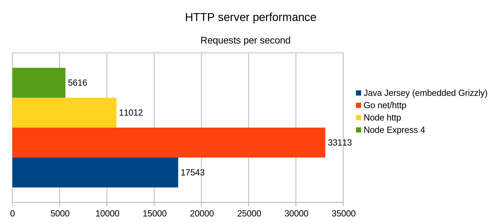
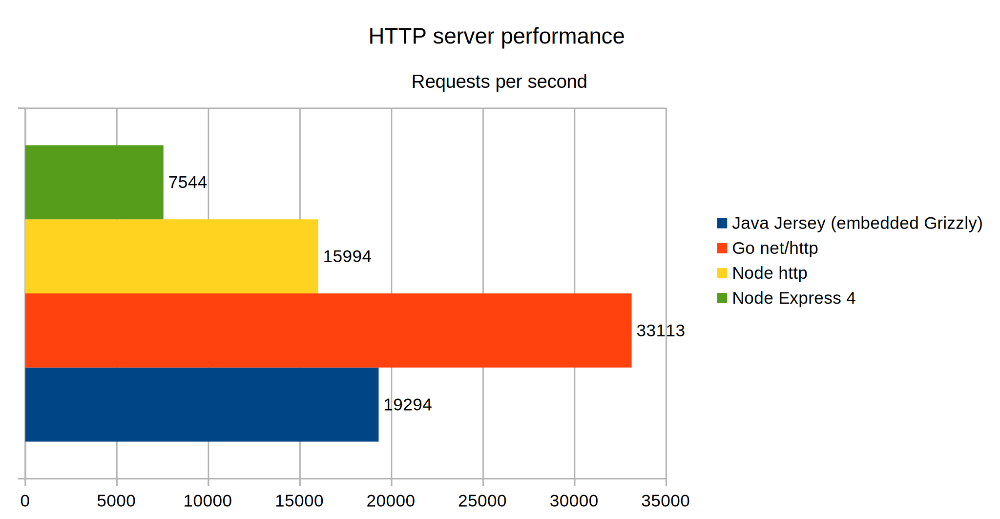

Http performance Java (Jersey) vs. Go vs. NodeJS
I developed a very basic benchmark suite to compare different HTTP server’s performance. It is inspired by arcadius/java-rest-api-web-container-benchmark, but uses h2load instead of ab.
I implemented four very basic REST APIs with exactly one route each, which exposes a small, static todo list as JSON.
Server Implementations
- Java: Jersey with embedded Grizzly
- Go: Using plain
net/httppackage - NodeJS: Using plain
httppackage - NodeJS: Using de-facto standard Express 4 framework
Setup
My machine, where the benchmark suite was executed on, has the following specifications.
|
|
Test parameters
Basically there are three parameters to be varied for the benchmark.
- The number of total reqests to be performed against the API. I chose to set this to 100,000
- The number of concurrent client to make those requests. I chose to have 32 concurrent clients, each of them making 3,125 requests.
- The number of threads to be used by h2load. I set this parameter to four, corresponding to the number of logical CPU cores of my machine.
Results
Running my benchmark script delivered the following results.

Discussion
First of all, please notice that this is definitely not a 100 % correct, scientifical evaluation. Rather it should give basic insights on the order of magnitute of the performance differences between different language’s HTTP servers.
As we can clearly see, Go is the fastest candidate among my test subjects. However, my implementation only utilized the plain, built-in http package without any custom ServeMux or any router or middleware on top of it. In a real-world application, one would most likely not operate on such a low level, but use frameworks like Iris on top, which add additional overhead.
Second place is Java using Grizzly as an embedded server inside a Jersey application. The reason for me picking Grizzly was that it pointed out to be the fastest among the common servers in this benchmark.
Both of my Node implementations perform worst in this benchmark, whereas Express is even only as half as good as the plain http package. Evidently, it introduces quite an amount of overhead. However, one would most likely not implement an actual REST API without a higher-level framework like Express. Consequently, the Express benchmark is probably more representative.
Conclusing I can say that I was pretty surprised about how large the differences between various servers are. Go is almost six times as fast as Node with Express, even though Express still has a very great performance.
The full benchmark results as well as the suite’s source code can be found at my GitHub project.
EDIT
At January 1st 2017 I did some minor adjustments to my benchmark suite. A thoughtful reader has drawn my attention to the fact that my comparison was a little unfair in the way that Go’s net/http as well as Grizzly use as many threads as the host system provides CPU core by default, while Node doesn’t. Using Node’s cluster module I made both Node-based webservers use four listener threads, too and actually the results have improved by around 45 %. Furthermore I did an adjustment to the Jersey + Grizzly server by changing the IOStrategy from the default WorkerThreadIOStrategy to SameThreadIOStrategy, which brought around 10 % in this specific case, where we don’t have any blocking computations but only spit out static JSON. If you’re interested in leaarning more about different io strategies, refer to this official documentation page. Here is my updated benchmark chart.
